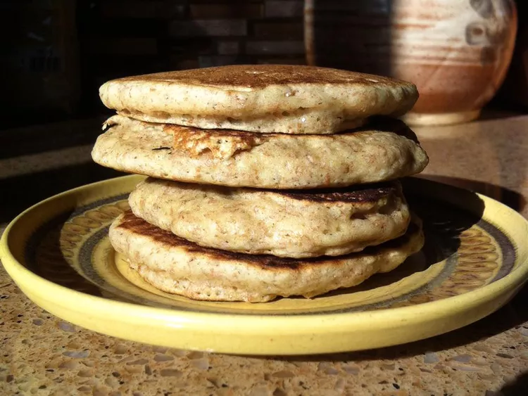

Return to Homepage
Soy Milk Pancakes
Recipe by:
LADYBACH

"Soy Milk Pancakes" Photo by
Keri Bailey
Description
Craving pancakes, but all you have is soy milk? Then this is the perfect solution!
Ingredients
- 1 cup all-purpose flour
- 1 ½ tablespoons white sugar
- 2 teaspoons baking powder
- ½ teaspoon baking soda
- ¼ teaspoon salt
- 1 cup vanilla soy milk
- 1 egg, lightly beaten
- 2 teaspoons vegetable oil
- ½ teaspoon vanilla extract
- ½ teaspoon almond extract
Steps
-
In a medium bowl, whisk together the flour, sugar, baking powder,
baking soda, and salt. In a small bowl, mix the vanilla soy milk,
egg, oil, vanilla extract, and almond extract. Pour the soy milk
mixture into the bowl with the flour mixture, and whisk together
until smooth.
-
Grease a skillet, and heat over medium low heat. Pour about 1/4
cup batter onto the heated skillet, and cook until bubbly. Flip
with a spatula, and continue cooking about 1 minute, until golden
brown. Repeat with the remaining batter.